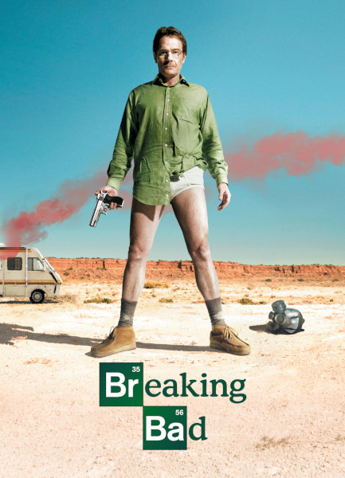

Visão Geral
Breaking Bad é uma série de televisão americana criada e produzida por Vince Gilligan. Ela retrata a vida do químico Walter White, um homem brilhante frustrado em dar aulas para adolescentes do ensino médio enquanto lida com um filho sofrendo de paralisia cerebral, uma esposa grávida e dívidas intermináveis. White, então, é diagnosticado com um câncer no pulmão, o que o leva a sofrer um colapso emocional e abraçar uma vida de crimes para pagar suas dívidas hospitalares e dar uma boa vida aos seus filhos. Walter resolve produzir metanfetamina de alta pureza com seu ex-aluno, Jesse Pinkman.
Breaking Bad se passa em Albuquerque, Novo México, e gira em torno das escolhas de seu protagonista, as quais o levam a uma intensa, dolorosa e inevitável transformação. Amplamente considerada como uma das melhores séries da história, ao seu final, foi um dos programas da televisão a cabo mais assistidos nos Estados Unidos, recebendo inúmeros prêmios. Em 2014, entrou para o Livro dos Recordes como o seriado mais bem avaliado de todos os tempos pela crítica.